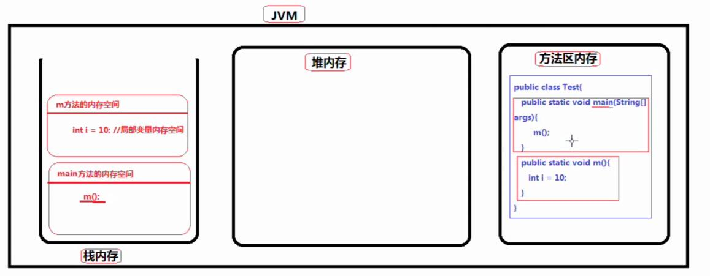
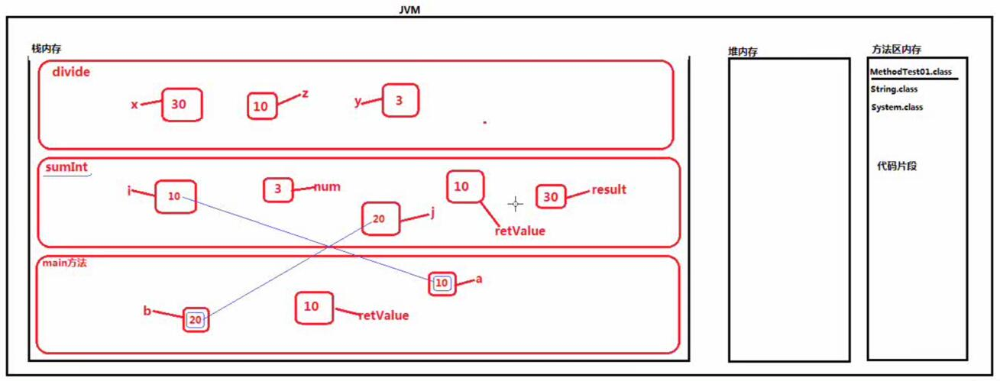
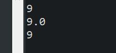

原文出处:本文由博客园博主心悦君兮君不知-睿提供。
原文连接:https://www.cnblogs.com/ruigege0000/p/11509699.html
原文连接:https://www.cnblogs.com/ruigege0000/p/11509699.html
一、JVM包含三个内存区：栈内存、堆内存、方法区内存

二、注意点
（1）在MyEclipse中字体是红色的是一个类的名字，并且这个类除了我们自定义的类是JavaSE类库中自带的
（2）其实JavaSE类库中自带的类，例如：String.class\System.class,这些类的类名也是标识符
（3）只要是类名就一定是标识符
内存分析举例：
public class D29_{
public static void main(String[] args) {
int a = 10;
int b = 20;
int retValue = sunInt(a,b);
System.out.println(retValue);
}
public static int sumInt(int i ,int j) {
int result = i + j;
int num = 3;
int retValue = divide(result,num);
return retValue;
}
public static int divide(int x,int y) {
int z = x/y;
return z;
}
}

三、方法重载
1.以下代码不使用“方法重载机制“，不使用overload，分析存在的缺点
public class D29_{
public static void main(String[] args) {
int result1 = sumInt2(1,2);
System.out.println(result1);
double result2 = sumDouble(1.0,2.0);
System.out.println(result2);
long result3 = sumLong(1L,2L);
System.out.println(result3);
}
public static int sumInt2(int a, int b) {
return a+b;
}
public static double sumDouble(double a,double b) {
return a+b;
}
public static long sumLong(long a ,long b) {
return a+b;
}
｝
缺点：（1）上面定义的方法功能虽然都不相同，但是功能都是类似的，就是求和，对于我们来说三种方法名字太多不好记，调用不方便，记忆难（2）不美观
需求机制：功能虽然不同，但是功能相似的时候，可以使用这些方法的时候，就想在使用同一种方法一样，后民安编写代码方便，也不需要记忆过多方法名，代码美观，这种机制就是方法重载（overload）
2.改写代码，具体解析下次更新再说。
public class D29_{
public static void main(String[] args) {
//调用方法的时候像在使用一个方法一样
//参数的类型不同，对应调用的方法不同
//此时区分方法不再依靠方法名依据的是参数的数据类型
System.out.println(sum(2,7));
System.out.println(sum(2.0,7.0));
System.out.println(sum(2L,7L));
}
public static int sum(int a,int b) {
return a+b;
}
public static double sum(double a ,double b) {
return a+b;
}
public static long sum(long a,long b) {
return a+b;
}
}
四、源码：
D29_method_overload_and_perform_memory_analysis.java
地址：
https://github.com/ruigege66/Java/blob/master/D29_method_overload_and_perform_memory_analysis.java
2.CSDN：https://blog.csdn.net/weixin_44630050（心悦君兮君不知-睿）
3.博客园：https://www.cnblogs.com/ruigege0000/
4.欢迎关注微信公众号：傅里叶变换，个人公众号，仅用于学习交流，后台回复”礼包“，获取大数据学习资料